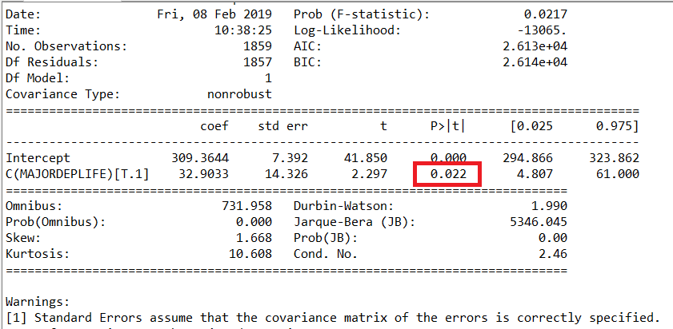
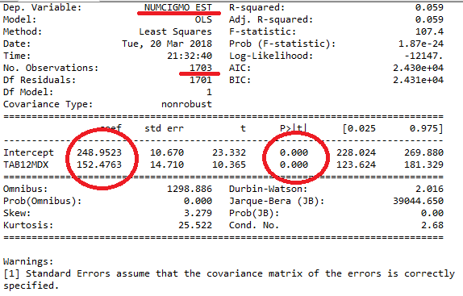
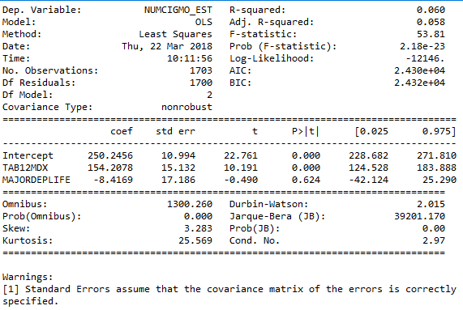
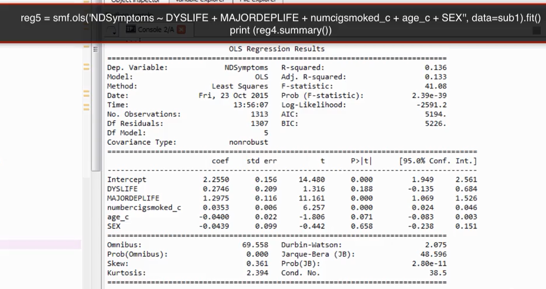
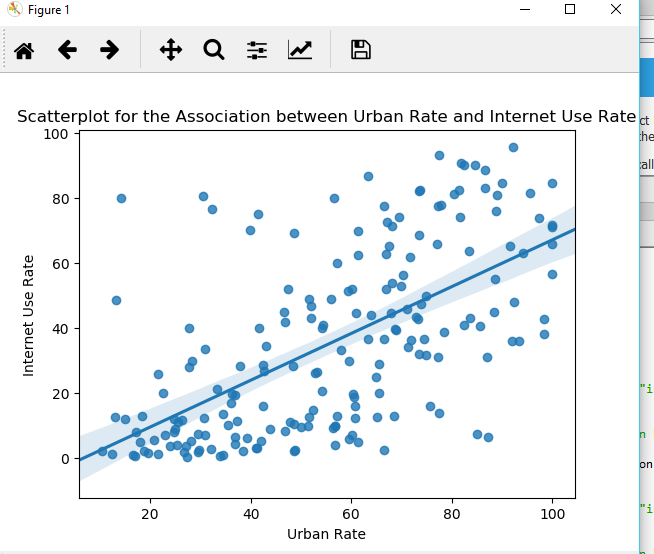
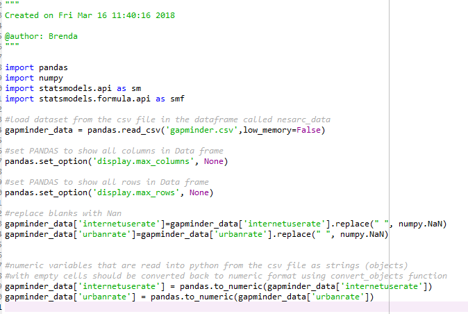
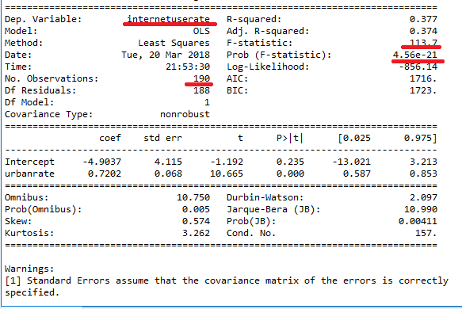
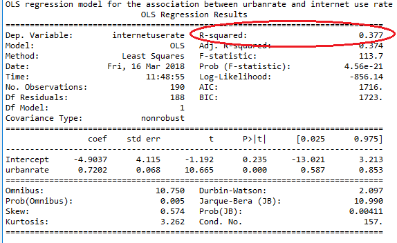
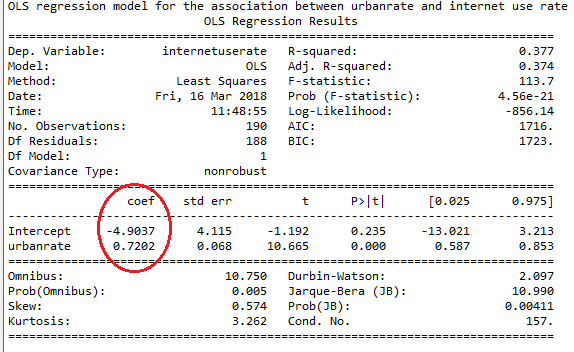

Continuous Assessment conducting regression analysis
In lab06 you worked on hypothesis testing, this is the initial work conducted to determine relationships between variables. You worked on the association between a diagnosis of major depression and how much a person smokes.
Explanatory variable MAJORDEPLIFE categorical Response variable NUMCIGMO_EST numerical
Looking back at the output for lab06 step 2 we can see the following:

A regression model can also be informative and help to predict a value. We can now use the intercept value and the coef value to determine how many cigarettes would be smoked by someone with a diagnosis of major depression. The linear equation is used to do this:
y = mx + b
y = slope(x) + intercept
NUMCIGMO_EST = 32.9033 (MAJORDEPLIFE) + 309.3644This tells us that when MAJORDEPLIFE contains the value of 1 indicating major depression, then the number of cigarettes smoked will be:
NUMCIGMO_EST = 32.9033(1) + 309.3644
NUMCIGMO_EST = 342When MAJORDEPLIFE contains the value of 0 indicating no diagnosis of major depression, then the number of cigarettes smoked will be:
NUMCIGMO_EST = 32.9033(0) + 309.3644
NUMCIGMO_EST = 309Lets look at the linear relationship between nicotine dependence and the number of cigarettes smoked per month.
Nicotine Dependence is a binary categorical explanatory variable, and the number of cigarettes smoked per month is a quantitative response variable.
Our research question is:
Open the following python file save aa Lab08_regression.py
At the end of this file we will add some code now to build a regression model.
Take note in the code we must ensure that the variables NUMCIGMO_EST and TAB12MDX have no spaces " " and are in fact numerical.
Next enter the following:
#regression for association between nicotine dependence and Number of cigarettes smoked per month
print('OLS regression model for the association between nicotine dependence and number of cigarettes smoked per month')
reg1 = smf.ols('NUMCIGMO_EST ~ TAB12MDX',data=subset2).fit()
print(reg1.summary())The response variable comes before the ~ tilda.

The name of our response variable, the number of observations with valid values in both variables. The parameter estimates (for the line equation) and our p values are also highlighted in the image above.
y = mx + b
y = slope(x) + intercept
NUMCIGMO_EST = 152.47 (TAB12MDX) + 248.95What does this tell us?
the variable TAB12MDX contains the value 1 if the observation is nicotine dependent and the value zero if the observation is not nicotine dependent.
We can place these values into the equation to get the number of cigarettes smoked for each group.
NUMCIGMO_EST = 152.47(0) + 248.95
NUMCIGMO_EST = 248.95
NUMCIGMO_EST = 152.47(1) + 248.95
NUMCIGMO_EST = 401.42Overall the model shows an F-Statistic value of 107.4 with a very small Prob (F stat) value ( that is less than our alpha value of .5 which tells us with 95% confidence that the null hypothesis is rejected) showing that the nicotine dependence does have a relationship with the number of cigarettes smoked per month and it is statistically significant.
The R-Squared value however shows that the nicotine dependence variable only accounts for 5% of the variance in the number of cigarettes smoked.
The intercept is 248.95 and is statistically significant with a p value of <.01.
Smokers without nicotine dependence smoke approximately 249 cigarettes per month.
Smokers with nicotine dependence smoke approximately 401 cigarettes per month.
We can support this finding with investigating the mean number of cigarettes per month for each group.
subset2 = subset2[['NUMCIGMO_EST','TAB12MDX']].dropna()
print("Mean")
ds1 = subset2.groupby('TAB12MDX').mean()
print(ds1)
print("STD")
ds2 = subset2.groupby('TAB12MDX').std()
print(ds2)When you see the output from this piece of code the mean for observations that are not nicotine dependent (zero value in TAB12MDX) is the same as the calculated regression equation 248.95. The same applied when TAB12MDX holds a 1 value for nicotine dependence.
Remember when you calculate the mean using the groupby on a categorical variable like TAB12MDX there are only two values so it shows you the mean for 0 that is not nicotine dependent and 1 for nicotine dependent. If you want to get the mean for a numerical variable you use the following :
dataframe_name['variable_name'].mean()We now have evidence that nicotine dependence is associated to the number of cigarettes smoked per month, we also know that having major depression is also associated to the number of cigarettes smoked?
We can add the categorical explanatory variable MAJORDEPLIFE, it has two values, 0 when the observation does not have major depression and 1 when the observation does.
Perhaps major depression is a confounder variable and is the true reason the number of cigarettes increases.
Place the following code in before your reduced your subset2 down to only TAB12MDX and NUMCIGMO_EST.
#Multivariate linear regression
print('OLS regression model for the association between nicotine dependence, major depression and number of cigarettes smoked per month')
reg2 = smf.ols('NUMCIGMO_EST ~ TAB12MDX + MAJORDEPLIFE',data=subset2).fit()
print(reg2.summary())
Looking at the results we can see that adding the MAJORDEPLIFE variable has increased the overall prob (F statistic) value. The MAJORDEPLIFE variable also shows a p value that is > 0.05 and so is not statistically significant and the coefficient value is negative. This means we cannot reject the null hypothesis that regression model is not significant for both variables effects on number of cigarettes.
However we can see that the nicotine dependence is still statistically significantly associated with number of cigarettes smoked having controlled for the existence of Major depression. We can conclude that Major depression is not a confounding variable in this case.
If the p value for nictotine dependence changed and was no longer < 0.05 it would mean that major depression was a confounding variable and was responsible for the association.
Note: if a parameter estimate (coefficient) is negative and has a significant P value, then it means the variable has a negative association with the response variable. These are called parameter estimates because they are from our sample they are not from the complete population.
For multiple regression we can keep adding categorical explanatory variables to check for confounding variables.
For example the following shows the output from testing the association of age, gender, number of cigarettes, major depression and Dysthymia on the quantitative response variable: number of nicotine dependent symptoms.

In this output we can see that only Major depression and number of cigarettes smoked have a statistically significant association with the number of nicotine dependent symptoms.
Where a quantitative explanatory variable is included in the model, it is necessary to centre the data. For example the age variable and number of cigarettes are quantitative and therefore each observation's age has the mean age subtracted from it and the number of cigarettes smoked for each observation has the mean number of cigarettes smoked subtracted from it, in order to include them in the model.
It is important to remember even after controlling many additional explanatory variables in our model we can not prove causation.
Create a new file called Lab08_ca.py
The first relationship we are going to investigate is between the explanatory variable urbanrate and the response variable internetuserate from the gapminder data set.
The null hypothesis is that urban rate has no relationship with the internet use rate. The alternate hypothesis is that a relationship exists between urbane rate and internet use rate.
These are both quantitative variables. From our scatterplot in lab 5 you can see a relationship may exist between these variables.
To identify the strength of this relationship we use linear regression.

We now test the model by determining the equation of the best fit line.
commonly seen as:
y = mx + b
Linear regression equation:
Ŷ = ß0 + ß1 * xY is the response variable X is the explanatory variable
b/ß0 is the intercept parameter m/ß1 is the slope parameter
Simple regression is where there is only one explanatory variable
In python we use the ordinary less squares or OLS function from the stats model formula API library.
Prior to doing this we must first replace any " " empty strings with NaN as we did before for both the urbanrate and internetuserate variables. Then we must convert both variables to_numberic so that python interprets them correctly in order to run the OLS function.

Next enter the following code to perform the linear regression.
#regression for association between urbandrate and internet use rate
print('OLS regression model for the association between urbanrate and internet use rate')
reg1 = smf.ols('internetuserate ~ urbanrate',data=gapminder_data).fit()
print(reg1.summary())Look at the output now:

Dep variable shows us the name of the response variable. We can see the number of observations that had valid data on both response and explanatory variables and we therefore included in analysis.
The top right section of the summary informs us of the significance of the overall regression model. The R-Squared value tells us the proportion of the change in the response variable that is attributed to the explanatory variable. In this case 38 of the change in internet use rate can be explained by urban rate.

The Prob (F-statistic) value is very small, considerably less than our alpha level of 0.5 (95% confidence). This tells us that we can reject the null hypothesis and conclude that urban rate is significantly associated with internetuserate.
Now we look at the parameter estimates to calculate our best fit line.

y = mx + b
y = slope(x) + intercept
internetuserate = .72 (urbanrate) + (-4.90 )The middle section of the summary explains the effect of the explanatory variable on the response variable. The size of the coefficient for the explanatory variable tell us the size of the effect. In this example when urbanrate goes up by 1 then internetuserate will increase by .7202
Looking at the output for the coefficients there is a column labeled P>|t| . This gives us the p value for our explanatory variable's association with the response variable. The p value is 0.000 which means that it is really small and less than .05 which is the generally accepted point at which you reject the null hypothesis. Here you would report the p value as p<.0001 and thus the likelihood of these results (i.e showing a relationship between the variables) coming up in a random distribution of data is less than 5%. Conversely you can say that with 95% probability that the variable urbanrate is having some affect on internetuserate.
We can now predict the value of Y when we know the value of X
Ŷ = ß0 + ß1 * x
ß1=0.72
x=80
ß0=-4.90
ŷ= -4.90 + (0.72)(80)
= 52.7We would expect 52.7 people out of every 100 to use the internet.
For every one unit increase in x we would expect y to increase by .72
Remember though this is the expected value that sits directly on the best fit line, our data will differ to some extent. Expected data is not the same as observed data.
This model is limited by the fact that we impose a causal model rather than test for causation (experimental study).
For example, Canada has an urban rate of about 80%. However its Internet use rate is observed at 81.3 not 52.7, this is why we include an error term in our model. Statistics allows us to identify trends in the data, and use those trends to look at what we would expect our data to look like.
Conduct the same analysis on the explanatory variable lifeexpectancy and the response variable employrate.
Submit your files to Moodle. - Lab08_regression - Lab08_ca